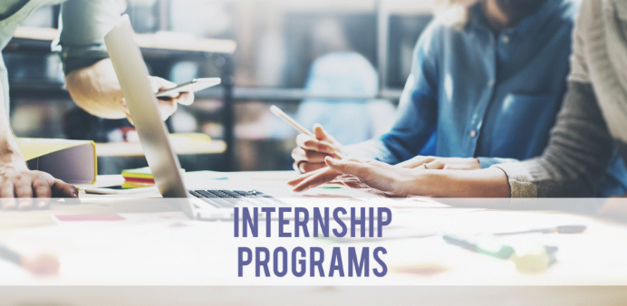

My commitment to community service began early and reached international recognition when, at the age of fifteen, I was nominated for the
International Children's Peace Prize 2021
in recognition of my voluntary efforts to educate and mentor Afghan women and children.
I started volunteer work at the Khadija Kubra Islamic Educational Center in 2019, where I provided educational support, mentoring, and tutoring to over 100 students in the field of Islamic education.
Following the political changes in Afghanistan in 2021, I intensified my efforts to support Afghan women and children through various initiatives such as home-schooling programs and online tutoring sessions.
Although the situation in 2021 was challenging and courses were closing down, I remained consistent to support children's education by organizing informal study groups and providing resources to ensure continued learning.
Despite the difficulties, my commitment to education and community service has remained unwavering. Right now, I am a volunteer English Instructor at Afghanistan Changemakers Org where I support Afghan women and children in their English language learning journey.
💼 Jobs
From June 2021 to August 2022, I worked as an English-Persian Medical Translator at Reviva Beauty Hospital in Kabul, Afghanistan. My responsibilities included translating medical documents, patient information, and facilitating communication between English-speaking medical staff and Persian-speaking patients.
This experience allowed me to develop strong organizational and communication skills, as well as a deeper understanding of the healthcare system in Afghanistan. Overall, my time at Reviva Beauty Hospital was a valuable learning experience that enhanced my language skills and provided me with insight into the medical field.
Subsequently, from September 2023 to December 2025, I worked as an OPI (Over the Phone Interpreter) Medical Interpreter at Gaheez organization, where I provided real-time interpretation services for medical consultations over the phone. Through this experience, I further honed my language skills and gained a deeper understanding of medical terminology and healthcare settings.
📚 Internships & Programs

My internship in Data Sourcing by GAO-Tek org honed my skills in data collection, data cleaning, and data analysis.
I have participated in several biology projects, expanding my knowledge in biology, data science, and healthcare. During my studies in school, my curiosity in biology and its impact on the world made me receive a certificate of recognition for my biology project for 3 consecutive years.
I joined a 3-month program of AI and Data Science organized by UNDP and Horizon Bridge Consulting, where I explored how to make AI agents to further help in data tracking and data analysis and how artificial intelligence can be applied in healthcare systems.
Additionally, I completed a 3-month workshop on Business and Entrepreneurship with UCA and Accelerate Prosperity org, where I learned the fundamentals of business planning, marketing strategies, and financial management.
These experiences have equipped me with valuable skills and knowledge that I am eager to apply in my future academic and professional endeavors.